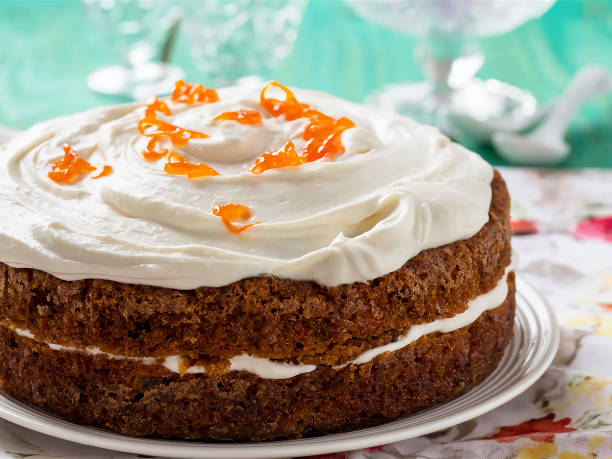

Receta bizcocho súper sabroso y saludable
Descripción
Entre los clásicos de la pastelería se encuentra el llamado carrot cake o pastel de zanahoria que si bien incluye zanahoria en su interior, también posee una considerable cantidad de azúcar añadido y harinas refinadas. Hoy te mostramos que es posible lograr una versión fitness de tarta de zanahoria con la receta que se puede ver a continuación. Tal como lo logramos con el pan de plátano, las magdalenas, un bizcocho e incluso una pizza, podemos obtener un pastel de zanahoria mucho más sano y nutritivo si escogemos los ingredientes adecuados y usamos reemplazos fitness para su elaboración.
Ingredientes
- 2 Zanahorias grandes ralladas
- 1 huevo
- 2 claras de huevo
- 1 naranja
- 60 gramos de Harina de avena
- 25 gramos de nueces picadas
- Stevia al gusto
Elaboración paso a paso
Primer paso: Comenzamos la elaboración de esta tarta de zanahoria fitness rallando las zanahorias finamente previamente lavadas y secadas. Rociamos con el zumo de la naranja de la receta y la ralladura de la misma. Reservamos..
Paso dos: En un recipiente batimos el huevo con la leche. Añadimos las zanahorias ralladas del paso anterior y agregamos la harina de avena.
Tercer paso: Mezclamos hasta obtener una preparación espesa, agregamos las nueces picadas y las claras de huevo batidas a punto nieve con movimientos envolventes para que aporten aire a la preparación.
Cuarto paso: Precalentamos el horno a 180°C y en un molde antiadherente o ligeramente rociado con aceite colocamos la preparación lograda. Horneamos por 30 a 40 minutos o hasta que al introducir un palito de brocheta este salga limpio por completo.
Quinto paso: Retiramos del horno y dejamos enfriar. Por encima untamos con queso fresco batido sólo o mezclado con unas gotas de stevia si queremos un sabor dulce.
Esta tarta de zanahoria fitness es la prueba de que recetas dulces y muy tentadoras pueden ser sanas también, con nutrientes que brindan saciedad y que no resultan adictivos como los azúcares libres. Acompañada de una taza de leche o un té en el desayuno o bien, en una merienda post entrenamiento esta tarta de zanahoria resulta el plato ideal para vencer la tentación con buenos nutrientes.
¡Buen provecho!